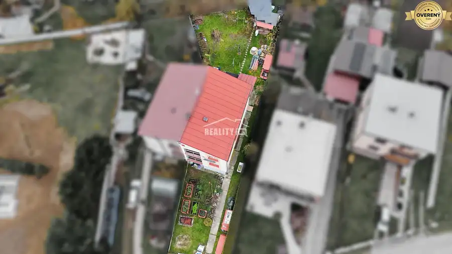
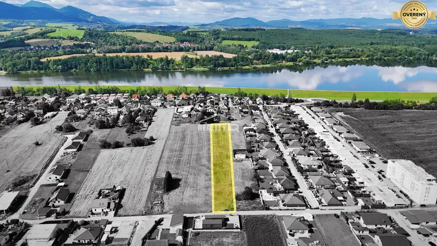
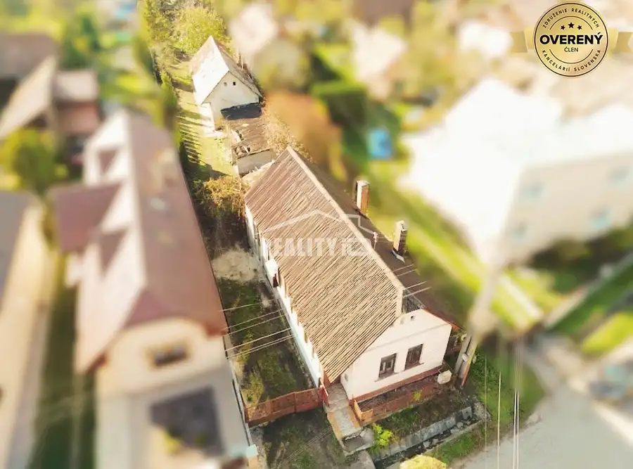
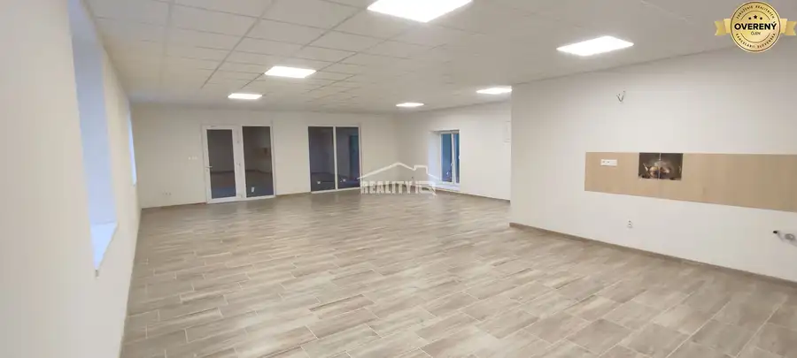
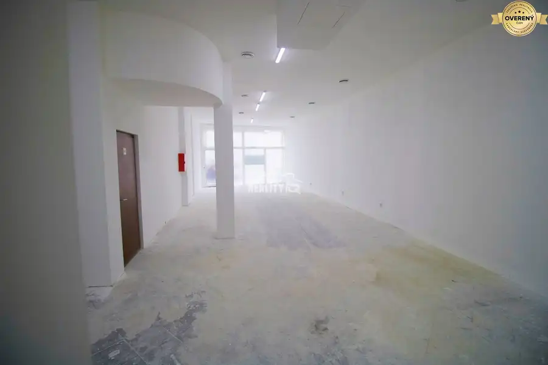
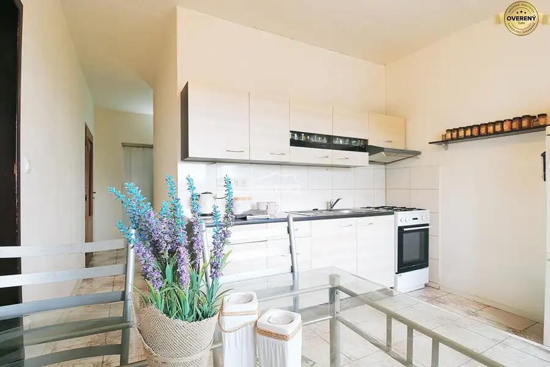
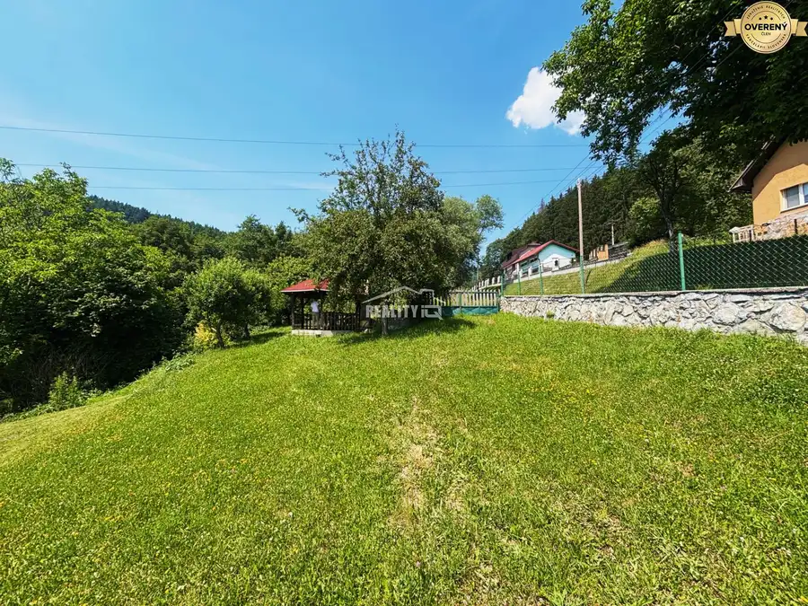
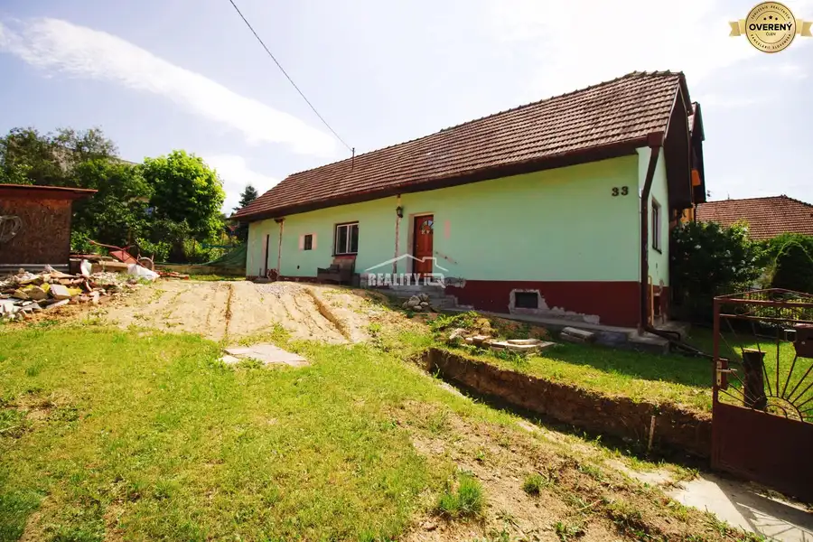
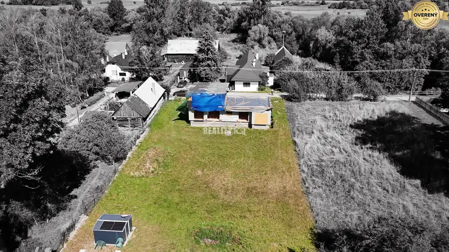
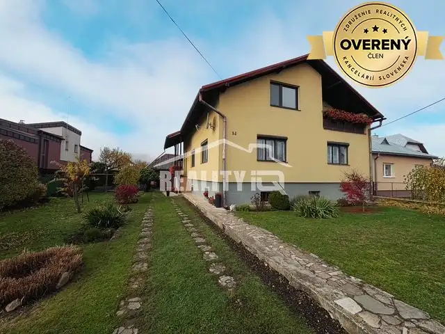

Aktuálna ponuka
Nehnuteľnosti, ktoré ponúkam
10 nehnuteľností na predaj a prenájom. Vyberte typ, alebo napíšte lokalitu.
10 z 10 ponúk

Rodinné domy10 Cena dohodouPredaj, dvojpodlažný rodinný dom, Bytča, Exkluzívne Reality IQ Bytča 260 m² Ponúkame Vám jedinečnú príležitosť vlastniť priestranný rodinný dom po rekonštrukcii v pokojnej a zároveň výborne dostupnej lokalite Bytče. Tento dom…
Pozemok4 Cena dohodouPredaj, pozemok, Mojš, Exkluzívne Reality IQ Mojš 3363 m² Ponúkame na predaj slnečný pozemok vo výmere 3363m2 v obci Mojš, len 10 min od mesta. Prístup na pozemok je po asfaltovej prístupovej ceste. Siete…
Rodinné domy8 127 000 €Predaj, dva rodinné domy, Svederník, Exkluzívne Reality IQ Svederník 156 m² Vo výhradnom zastúpení ponúkame rodinný dom s hosťovským domom v obci Svederník. Dom je v pôvodnom stave vo výmere 90m2. Dispozícia domu : vstupná…
Nebytové priestory10 1 000 €Prenájom, obchodný, admin. priestor, Centrum , Reality IQ Žilina 90 m² Ponúkame na prenájom obchodný / administratívny priestor na Národnej ulici v mesta Žilina. Priestor o výmere 90 m2 vrátane toaliet je po kompletnej…
Nebytové priestory5 1 700 €Prenájom, nebytový priestor, centrum, Žilina Žilina, ŽIlina 145 m² Ponúkame na prenájom vzdušný, otvorený, komerčný priestor o výmere 145 m² v top frekventovanej lokalite – pri tržnici, priamo pri Auparku v Žiline. ✔…
Byt10 139 900 €PREDAJ, 2 izbový byt, Martin- Košúty 1, Exkluzívne Realityiq Martin 2-izbový63 m²6. podlažie Ponúkame na predaj priestranný 2-izbový byt s výmerou 63 m², nachádzajúci sa v časti Košúty I na 6. poschodí zatepleného bytového domu s novým…
Pozemok3 95 000 €EXKLUZÍVNE NA PREDAJ - Stavebný pozemok v Kysuckom Novom Meste Kysucké Nové Mesto 807 m² Reality IQ Vám ponúka na predaj atraktívny pozemok s celkovou výmerou 807 m²,vo vyhľadávanej lokalite mesta Kysucké Nové Mesto, v zastavanom území…
Rodinné domy10 160 000 €Predaj, rodinný dom,Trnové, Exkluzívne Reality IQ Žilina 90 m² Ponúkame rodinný rodinný dom v obci Trnové. Rodinný dom je v pôvodnom stave, pripravený na rekonštrukciu. Úžitková plocha domu je 90m2. Plocha…
Rodinné domy10 Cena dohodouPredaj, rodinný dom,Ivančiná,Turčianske Teplice Exkluzívne Reality IQ Ivančiná 4-izbový118 m² Na prvom nadzemnom podlaží sa nachádzajú predsieň, chodba, kuchyňa s obývačkou, špajza, kúpeľňa, spálňa, garáž. Na druhom nadzemnom podlaží sa…
Rodinné domy10 Cena dohodouPredaj, dvojpodlažný rodinný dom, Bánová, Exkluzívne Reality IQ Žilina 248 m² Predstavte si miesto, kde každý deň začína pokojom, vôňou kávy z kuchyne a výhľadom na zeleň. Miesto, kde máte dostatok priestoru pre rodinu,…Tomuto výberu zatiaľ nezodpovedá žiadna ponuka. Napíšte mi, čo hľadáte.